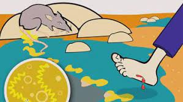

Leptospirosis is a rare bacterial infection that can affect animals and people. It can pass from animals to humans if there is an unhealed wound in the skin that comes in contact with water or soil where animal urine is present.
SIGNS AND SYMPTOMS OF LEPTOSPIROSIS:
These are the signs or symptoms if you have Leptospirosis:

High fever
Headache
Muscle ache
Chills
Vomiting
Jaundice (Yellow skin and eyes)
Abdominal pain
Diarrhea
Rash
Red eyes
The time between a person's exposure to a contaminated source and becoming sick is 2 days to 4 weeks. This usually begins with fever and other symptoms. Leptospirosis can occur in 2 phases:
After the first phase (This is where the person may experience fever, chills, headache, muscle aches, diarrhea and vomiting) the patient may recover for a time but become ill again.
If a second phase may occur this is more severe. The patient may have kidney failure, liver failure or meningitis. (Meningitis is an inflammation or swelling of the protective membranes surrounding the brain and spinal cord.)
HOW CAN I AVOID LEPTOSPIROSIS?:
We can avoid Leptospirosis by following these steps:
Cover your cuts or wounds with waterproof bandages if it's impossible for you to avoid contaminated water.
Wear boots or waterproof clothing near floodwater that may be contaminated by animal urine.
Do not swim, submerse your head in, or swallow floodwater.
Prevent rodent infestation by keeping food, water and trash in closed containers, and trapping any rodents you see.
HOW CAN WE TREAT LEPTOSPIROSIS?:
Leptospirosis can be treated through antibiotics, such as doxycycline or penicillin, which should be given early in the course of the disease. But the best way is that some doctors should guide you.
Star Bursting
WHO
Who are the people that are mostly affected by leptospirosis?
The kids that play or swim in the flood, mine workers, sewer (sanitary) workers and farmers.
Who are the people that can treat leptospirosis?
Usually you can ask help from doctors or health care providers
Who is at risk at leptospirosis?
Human to human transmissions are rare, but mostly people that are at risk of leptospirosis are the Outdoor and agricultural workers.
What
What kind of work is prone to leptospirosis?
These are farmers, miners, veterinarians, sewer (sanitary) workers and many more.
What kind of bacteria causes leptospirosis?
It is caused by the bacteria of genus Leptospira.
What kind of treatment is usually given to people that have leptospirosis?
They are usually treated with antibiotics, such as doxycycline or penicillin, which should be given early in the course of disease.
Why
Why did leptospirosis happen?
It is because of the animal urines.
Why do we have Leptospirosis?
It is caused by the bacteria Leptospira.
Why can we be affected by leptospirosis?
We can be affected by leptospirosis because of the unhealed wounds then it comes in contact with contaminated soil or water.
Where
Where is leptospirosis most common?
It is most common in temperate or tropical climate regions.
Where does the urine of dirty animals can be found?
Farms, floods, sewers etc.
Where did leptospirosis originate?
The bacteria enters the body through skin or mucous membrane (mouth, nose and/or eyes.)
When
When did the leptospirosis usually happen?
It usually happens on rainy days.
When was the leptospirosis first discovered?
It was first discovered as a disease of sewer workers by Landouzy in 1883.
When do leptospirosis occur?
It usually appears suddenly, about 5 to 14 days after the infection.
How
How does leptospirosis happen?
It happens when a certain person has a wound and steps on mud or water that has an animal urine.
How did leptospirosis become a communicable disease?
It is because the bacteria are spread through direct or indirect contact between urine from infected animals and breaks in human skin or membrane.
How can it be prevented?
You can wear boots or waterproof clothes to avoid contaminated water, don't swim or play in the flood, Cover your wounds with waterproof bandages if it's impossible for you to avoid floodwater.